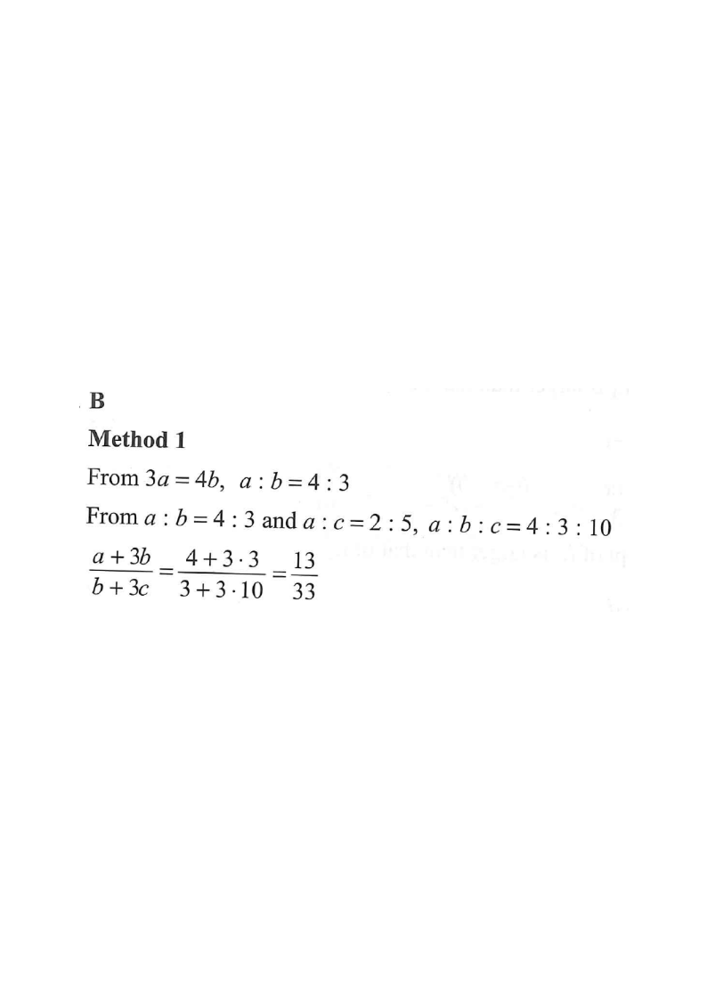

Finding an expression in three variables given two ratio conditions.
Scroll the solution to highlight each step.
Let $a$, $b$ and $c$ be non-zero numbers. If $3a=4b$ and $a:c=2:5$, then $\dfrac{a+3b}{b+3c}=$

From $3a=4b$, divide both sides by $12b$ ($b\neq0$):
$$\frac{3a}{12b}=\frac{4b}{12b}\ \Longrightarrow\ \frac{a}{b}=\frac{4}{3}\quad\text{so}\quad a:b=4:3.$$
Hint: an equation $3a=4b$ becomes a ratio $a:b=4:3$ — cross the coefficients.Given directly in the question:
$$a:c=2:5.$$
Hint: $a$ appears in both ratios — it is the "bridge" linking $b$ and $c$.The value of $a$ must be the same in both. LCM of $4$ and $2$ is $4$:
$$a:b=4:3 \qquad a:c=2:5=4:10$$
So combining (the parts of $a$ now match):
$$a:b:c=4:3:10.$$
Hint: scale the second ratio by $\times2$ so that both ratios show the same $a$-share ($=4$).Take $a=4k,\ b=3k,\ c=10k$ for some $k\neq0$ (the $k$ cancels):
$$\frac{a+3b}{b+3c}=\frac{4k+3(3k)}{3k+3(10k)}$$
Hint: use a common multiplier $k$ so that every variable has the same "unit".Numerator: $\;4k+9k=13k$ Denominator: $\;3k+30k=33k$
$$\frac{a+3b}{b+3c}=\frac{13k}{33k}=\frac{13}{33}.$$
Hint: the factor $k$ cancels completely — the answer depends only on the ratio.Question. If \(2p=5q\) and \(p:r=3:4\), find \(\dfrac{p+2q}{q+2r}\).